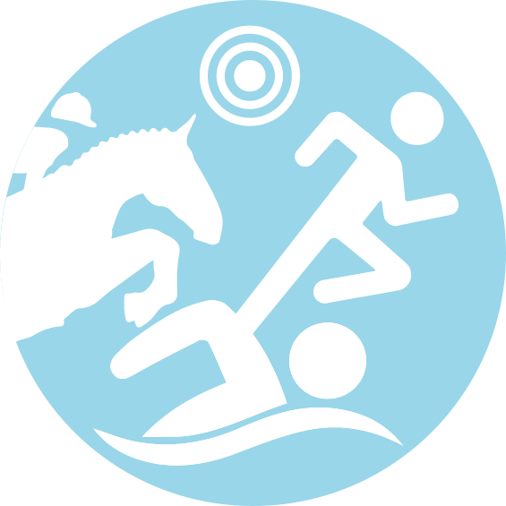
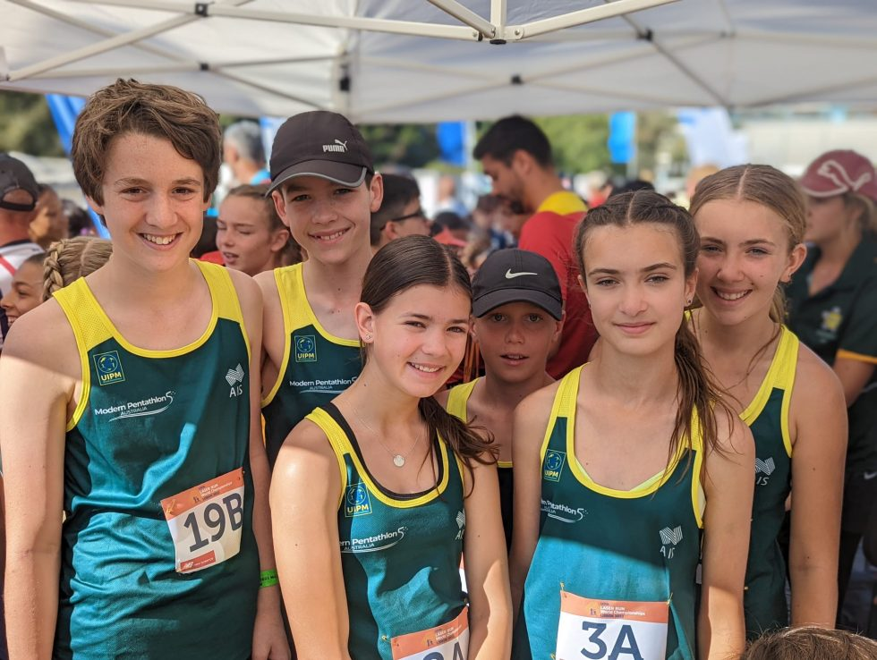

Entries now open for the triathle and laser run hosted by Modern Pentathlon Victoria at Kardinia International College, Bell Post Hill
Saturday: Laser Run
Sunday: Come and try fencing, triathle
Beginners welcome for both events, we'll help you learn the basics!
Tetrathlon and Multi-Sport Event hosted by the Wannon Zone in conjunction with Modern Pentathlon Victoria.
Events include
RIDE/RUN/SHOOT: Dennington Pony Club, Warrnambool Showgrounds, 331 Koroit St, Warrnambool
SWIM: Aqua Zone Warrnambool, Queens Rd, Warrnambool
For further information and to enter, see entry form below:
Modern Pentathlon Victoria extends our congratulations to the following Victorian athletes who have been selected for upcoming international representative teams:
Full team selection available on MPA Website.
Entries now open for the Modern Pentathlon Australia National Laser-Run Championships.
Saturday: informal Laser-Run relay, come and try, social BBQ
Sunday: Laser Run Championship, Laser Run Novice Event, OCR Introduction come and try
Laser-Run is a compenent of the Olympic sport of Modern Pentathlon and requires athletes to run a lap, hit 5 bullseyes as fast as possible before continuing on their next lap. This is repeated for up to 5 laps (4 rounds of shooting). Laser Equipment available for all athletes including come and try.
Drysdale Leopold Pony club and Modern Pentathlon Victoria invite you to participate in a State Qualifier Tetrathlon event to be held at Drysdale Leopold Pony Club - Lake Lorne reserve, Gilchrist St Drysdale on Sunday 28th May.
MPV athletes excelled at the Modern Pentathlon Australia Nationals, with Tully Watt, Kian Blanchard and Zoe addinsal each winning gold in their field. Numerous other athletes represented victoria and put in incredible performances to podium and smash PBs.
Full Results can be found on the MPA Website.

The Modern Pentathlon Victoria AGM is being held via zoom on Thursday the 19th of May at 7pm.
Please advise Kate Thompson via email kthomo1984@gmail.com if you are planning to attend the AGM, so a zoom invitation can be sent to your email.
Modern Pentathlon Victoria's updated competition Calendar is now available!
Access information and entry forms for upcoming Pentathlon and Tetrathlon events.
Preliminary results:
Congratulations to all athletes who competed at the PCV Tetrathlon State Championships. A special congratulations to Tully Watt and Cohen Wade, joint recipients of the Jan Dear Memorial Award for their contribution to tetrathlon.